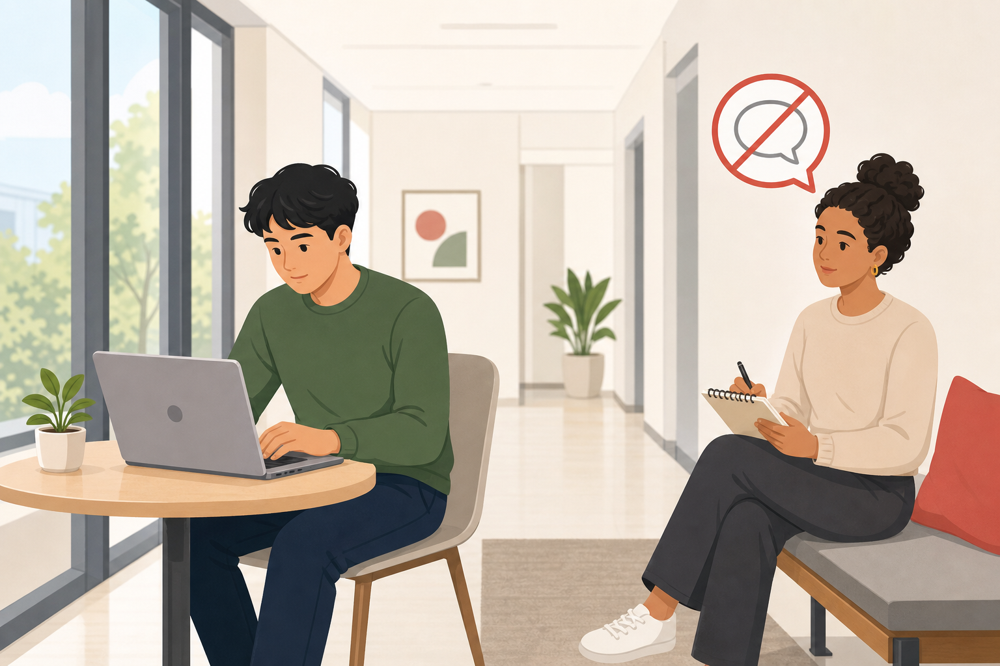
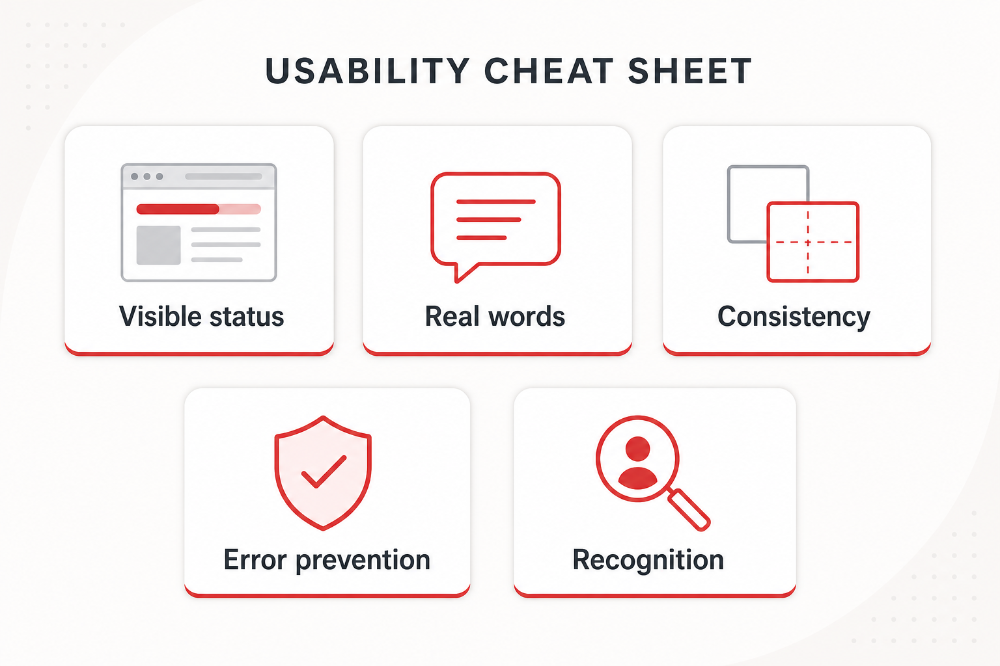

Usability is not decoration. It’s whether a first-time visitor can finish the main task without help.
The developer tests only their own happy path.
Labels, buttons, and flows make sense only to the person who built them.
Users blame themselves and leave.
Someone else must be able to finish the task — that is the test.
Always show what’s happening.
Words users know, not table names.
Same action looks the same everywhere.
Confirm destructive actions, validate early.
Show options; don’t make users remember.
Usability turns “it works” into “it’s easy.”

Can a visitor find a product and check out without help?
Is the next available slot obvious?
Is “post” the loudest action on the page?
If the answer is no, that’s this week’s work item.
Watch one person use your app. Don’t speak. Where they hesitate is your bug list.

Visible status · Real words · Consistency · Error prevention · Recognition over recall.